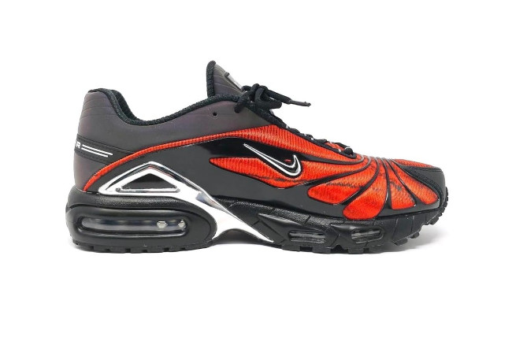

Não é de hoje que o rapper Skepta vem trabalhando ao lado da Nike. A marca trouxe uma grande missão na mão do artista, deixando o britânico na responsa da reintrodução do AIR MAX TAILWIND V no mercado.
A releitura feita por Skepta, traz o pisante em uma forma mais robusta, mudando um pouco de seu formato, ganhando novos detalhes em plástico. A colaboração ainda não possui data de lançamento. Confira imagens abaixo:
Para adquirir esse modelo basta clicar aqui.